EdgeCount Package Tutorial
Joel R Pradines
2025-12-20
EdgeCount-Tutorial.RmdIntroduction
The EdgeCount package provides a statistical framework
for enrichment analysis based on graph connectedness. It is designed for
large, sparse graphs, such as protein interaction networks, social
networks, or term-element membership graphs (bipartite graphs).
The package’s methodology combines the Random Graph with Given Expected Degrees (RGGED) model (Chung and Lu 2002) with analytical expressions for connectedness effect size and p-value (Pradines et al. 2005).
It also introduces Vertex Set Enrichment Analysis (VSEA), a permutation-based method similar to GSEA (Subramanian et al. 2005). VSEA uniquely accounts for the degree of each element (i.e., the number of terms an element belongs to).
The primary functions allow users to:
- Evaluate a graph’s suitability for some of the EdgeCount statistical models.
- Test for internal connectedness within one or more sets.
- Test for connectedness between pairs of sets.
- Score a collection of terms against a single set or a data table of element sets.
- Perform Vertex Set Enrichment Analysis (VSEA) on a ranked list of elements.
- Summarize VSEA results with Normalized Enrichment Scores (NES) and FDR q-values.
Installation
The EdgeCount package is currently available on GitHub.
It can be installed using the devtools package.
# install.packages("devtools")
devtools::install_github("JoelRMath/EdgeCount")Usage
This section provides an overview of the main use cases for the package.
Creating a Graph
The core objects for any analysis are ECGraph, which
holds the graph structure, and ECProb, which adds
statistical model parameters and methods.
The first step is to create these objects from an edge list. The
ECGraph() constructor is flexible and can accept this list
as a data.frame, a file path, or an igraph
object.
Here is an example for a graph of order 5 (number of vertices) and size 5 (number of edges).
library(EdgeCount)
library(data.table)
library(igraph)
# Data frame of edges
edge_df <- data.frame(
p1 = c("A", "B", "C", "D", "E"),
p2 = c("B", "C", "A", "E", "A"),
stringsAsFactors = FALSE
)
# ECGraph and ECProb objects from the edge list
ecg <- ECGraph(edge_df)
ecg
#> An object of class "ECGraph"
#> ------------------------------------------------
#> Statistics:
#> Vertices: 5
#> Edges: 5
#> Vertex names: A, B, C, D, E
#>
#> Slot Summary:
#> @adj : List of length 5 (Adjacency)
#> @degrees : List of length 5 (Integer degrees)
#> @names : Character vector of length 5
#> ------------------------------------------------
ecp <- ECProb(ecg)
# Same from a file
temp_file <- tempfile(fileext = ".tsv")
write.table(edge_df, file = temp_file, sep = "\t", row.names = FALSE, quote = FALSE)
ecg_from_file <- ECGraph(temp_file, col1 = "p1", col2 = "p2", header = TRUE, sep = "\t")
ecp_from_file <- ECProb(ecg_from_file)
unlink(temp_file)
# Same from an igraph object
igraph_obj <- igraph::graph_from_data_frame(edge_df, directed = FALSE)
ecg_from_igraph <- ECGraph(igraph_obj)
ecp_from_igraph <- ECProb(ecg_from_igraph)
# ECProb
ecp
#> An object of class "ECProb"
#> ------------------------------------------------
#> Statistics:
#> Vertices: 5
#> Edges: 5
#> Average Degree: 2
#> Vertex names: A, B, C, D, E
#>
#> Slot Summary:
#> @adj : List of length 5
#> @degrees : List of length 5
#> @names : Character vector [5]
#> @graph_size : Numeric
#> @graph_order : Numeric
#> @average_degree : Numeric
#> ------------------------------------------------The S4 class ECProb inherits the slots of
ECGraph:
-
@names: vertices names, as a chr vector -
@adj: adjacency list, as a named list linking each vertex to its neighbors -
@degrees: vertex degrees, as a named list
ECProb has the additional slots
@graph_size, @graph_order and
@average_degree, as well as statistical methods and
functions that will be presented later. In order to properly use these
functions, it is important to first check the suitability of the
underlying ECGraph for some of them.
Suitability for fast approximations
Even though it is not based on a large ECGraph, the
previous example of ECProb object meets the criteria for
fast approximations.
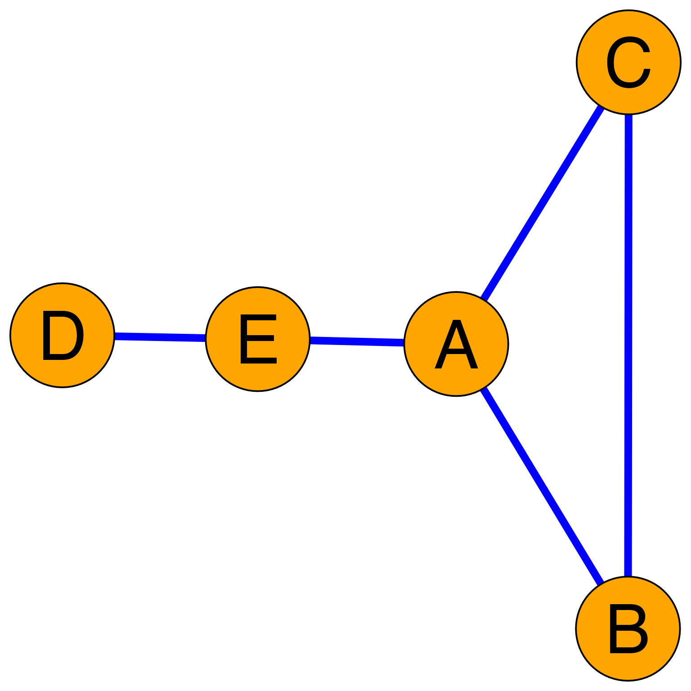
This is verified by using method
summarize_suitability_fast() of ECProb.
suitability_stats <- summarize_suitability_fast(ecp)
suitability_stats
#> $pij_over_1
#> [1] 0
#>
#> $prop_problematic_vertices
#> [1] 0
#>
#> $summary_pij
#> Min. 1st Qu. Median Mean 3rd Qu. Max.
#> 0.200 0.225 0.400 0.390 0.550 0.600
#>
#> $pij_distribution
#> pij count prop
#> <num> <int> <num>
#> 1: 0.2 3 0.3
#> 2: 0.3 1 0.1
#> 3: 0.4 3 0.3
#> 4: 0.6 3 0.3-
$pij_over_1is the important criterion: the proportion of edges (among all possible pairs of vertices) that yield a connection probability greater than 1 (hence unsuitable) under an approximate analytical framework of the RGGED. A value close to 0 means that fast approximation methods are appropriate. -
$prop_problematic_verticesis the proportion of vertices with degree greater than , where is the graph sizeecp@graph_size. Indeed, under the model for fast approximations, , where is a vertex degree; so any vertex with might yield for connection to another vertex . -
$summary_pijis a short summary of the distribution of connection probabilities over all pairs of vertices -
$pij_distributionis the full distribution of values in the RGGED model with fast approximations.
Here is now a small graph that, even though not a complete graph, does not pass the suitability test.
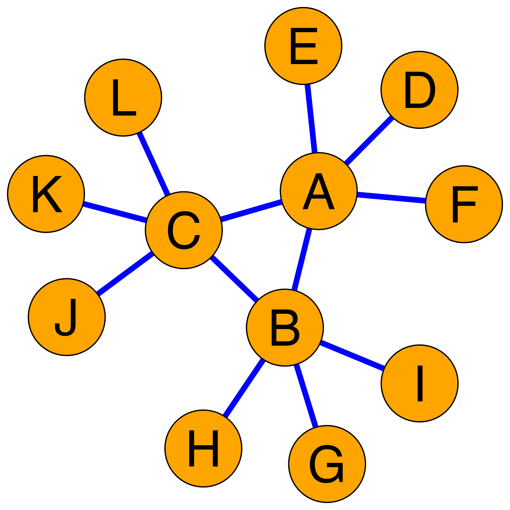
edge_df <- data.frame(
p1 = c("A", "A", "A", "A", "A", "B", "B", "B", "B", "C", "C", "C"),
p2 = c("B", "C", "D", "E", "F", "C", "G", "H", "I", "J", "K", "L"),
stringsAsFactors = FALSE
)
ecp <- ECProb(ECGraph(edge_df))
suitability_stats <- summarize_suitability_fast(ecp)
suitability_stats
#> $pij_over_1
#> [1] 0.04545455
#>
#> $prop_problematic_vertices
#> [1] 0.25
#>
#> $summary_pij
#> Min. 1st Qu. Median Mean 3rd Qu. Max.
#> 0.04167 0.04167 0.04167 0.15530 0.20833 1.04167
#>
#> $pij_distribution
#> pij count prop
#> <num> <int> <num>
#> 1: 0.04166667 36 0.54545455
#> 2: 0.20833333 27 0.40909091
#> 3: 1.04166667 3 0.04545455The pij_over_1 value is 4.5%. This indicates that some
vertex pairs have an approximate edge probability greater than or equal
to 1, making the fast approximation methods unsuitable. For such a
graph, other methods are available in the package.
The fast approximation methods are based on and valid when , otherwise or need to be utilized, and the resulting methods are slower.
This said, false-positive results cannot be obtained with fast approximation methods. Indeed,
- they overestimate values,
- they underestimate effect sizes,
- they overestimate edge-count p-values.
In other words, using the fast approximation methods by default is a conservative approach to analysis.
The package comes with object sample_ecg, an example of
real large sparse graph based on the human network of the STRING
database (version 12.0)(Szklarczyk et al. 2023),(“Dataset:
Sample_ecg” 2025). The network is limited to protein
interactions having a confidence score greater than or equal to 900.
Proteins IDs have been replaced with their mapped Gene Entrez IDs.
data("sample_ecg")
sample_ecp <- ECProb(sample_ecg)
sample_ecp
#> An object of class "ECProb"
#> ------------------------------------------------
#> Statistics:
#> Vertices: 7,244
#> Edges: 19,600
#> Average Degree: 5.4114
#> Vertex names: 10, 100, 1000, 10005, 10006...
#>
#> Slot Summary:
#> @adj : List of length 7,244
#> @degrees : List of length 7,244
#> @names : Character vector [7244]
#> @graph_size : Numeric
#> @graph_order : Numeric
#> @average_degree : Numeric
#> ------------------------------------------------This network is relatively large and it is sparse.
system.time(suitability <- summarize_suitability_fast(sample_ecp))
#> user system elapsed
#> 0.669 0.057 0.727
suitability
#> $pij_over_1
#> [1] 0
#>
#> $prop_problematic_vertices
#> [1] 0
#>
#> $summary_pij
#> Min. 1st Qu. Median Mean 3rd Qu. Max.
#> 2.551e-05 1.531e-04 3.827e-04 7.470e-04 9.184e-04 1.592e-02
#>
#> $pij_distribution
#> pij count prop
#> <num> <int> <num>
#> 1: 2.551020e-05 944625 3.600746e-02
#> 2: 5.102041e-05 1354375 5.162642e-02
#> 3: 7.653061e-05 1034000 3.941428e-02
#> 4: 1.020408e-04 1412745 5.385138e-02
#> 5: 1.275510e-04 820875 3.129033e-02
#> ---
#> 217: 1.349490e-02 6 2.287096e-07
#> 218: 1.408163e-02 8 3.049461e-07
#> 219: 1.525510e-02 4 1.524730e-07
#> 220: 1.469388e-02 1 3.811826e-08
#> 221: 1.591837e-02 2 7.623652e-08Indeed, it is suitable for fast approximations not only because
pij_over_1 = 0, but also because the majority of
values are close to
.
Object sample_ecp is utilized next to provide examples
of ECProb uses.
Analysis with Interaction Networks (ECProb)
Example of connectedness analyses within an undirected, unipartite graph are now presented.
Tests for ‘within-set’ connectedness
These tests address the question: “Are the vertices of a given set more connected to each other than expected by chance?”
To answer this, the concept of “chance” is defined by the Random Graph with Given Expected Degrees (RGGED). In this null model:
- The set of vertices and their individual degrees are specified (given).
- The edges are treated as independent random variables.
By comparing the observed edge count within to the distribution of edge counts generated by the RGGED, the statistical significance of the connectedness is determined while accounting for “hub effects” (vertex degrees).
Basic method
The package also comes with a sample bipartite network
sample_ects that maps a trimmed version of GO categories to
their human gene elements (Carlson 2019), (The Gene Ontology Consortium
2023), (“Dataset: Sample_ects”
2025). Object sample_ects@ecprob is utilized
below to define with a term a set of elements/vertices which is then
tested for its connectedness in interaction network
sample_ecp.
# bipartite network (term-element relationships)
data("sample_ects")
# term descriptions
data("sample_term_lookup")
setA_id <- "GO:0032395"
setA_name <- sample_term_lookup[setA_id]
setA_name
#> GO:0032395
#> "MHC class II receptor activity"
# elements mapped to term (bipartite network sample_ects@ecprob)
setA <- get_neighbors(sample_ects@ecprob, setA_id)
length(setA)
#> [1] 7
# observed edge count in the graph between elements (interaction network sample_ecg)
data("sample_ecg")
sample_ecp <- ECProb(sample_ecg)
observed_ec <- get_edge_count_in(sample_ecp, setA)
# calculation of statistics
statsA <- edge_count_statistics(sample_ecp,
set1 = setA,
set2 = NULL,
observed_edge_count = observed_ec,
lambda_method = "fast")
statsA
#> $p_value
#> [1] 1.040078e-21
#>
#> $observed_edge_count
#> [1] 8
#>
#> $log2_Anscombe_ratio
#> [1] 2.223494
#>
#> $lambda
#> [1] 0.008979592
#>
#> $max_possible_edges
#> [1] 21
#>
#> $size1
#> [1] 7
#>
#> $size2
#> [1] 0Method edge_count_statistics() returns a list:
-
$observed_edge_countis the observed number of edges, here the edge count withinsetA -
max_possible_edgesis the maximum number of edges one could observe in the RGGED, here the number of pairs withinsetA, i.e. -
$lambda, is the expected number of observed edges withinsetAin the RGGED, that is, the average number of edges over all realizations of the RGGED -
$p-valueis , where is the random variable ‘number of edges withinsetA’ in the RGGED -
$log2_Anscombe_ratiois the observed log effect size -
$size1is the size of the input set reduced to its vertices represented in theECProbobject -
$size2is used only for between-sets connectedness. Here it is zero because argumentset2is null
Calling the probability of connecting two vertices and in the RGGED, the degree of a vertex, the graph size and the random variable ‘number of edges within under the RGGED model’, we have
Using as effect size is important because can have a truncated Poisson distribution of parameter small enough to yield an asymmetric distribution.
With lambda_method = "fast" calculations are
simplified
Namely, time complexity is now instead of .
To illustrate the importance of accounting for the degree of each
vertex consider now the following setB.
# bipartite network (term-element relationships)
data("sample_ects")
setB_id <- "GO:0006729"
# term descriptions
data("sample_term_lookup")
setB_name <- sample_term_lookup[setB_id]
setB_name
#> GO:0006729
#> "tetrahydrobiopterin biosynthetic process"
# elements mapped to term (bipartite network sample_ects@ecprob)
setB <- get_neighbors(sample_ects@ecprob, setB_id)
length(setB)
#> [1] 7
# observed edge count in the graph between elements (interaction network sample_ecg)
data("sample_ecg")
sample_ecp <- ECProb(sample_ecg)
observed_ec <- get_edge_count_in(sample_ecp, setB)
# calculation of statistics
statsB <- edge_count_statistics(sample_ecp,
set1 = setB,
set2 = NULL,
observed_edge_count = observed_ec,
lambda_method = "fast")
statsB
#> $p_value
#> [1] 1.782436e-15
#>
#> $observed_edge_count
#> [1] 8
#>
#> $log2_Anscombe_ratio
#> [1] 2.14304
#>
#> $lambda
#> [1] 0.05428571
#>
#> $max_possible_edges
#> [1] 21
#>
#> $size1
#> [1] 7
#>
#> $size2
#> [1] 0While setA and setB have the same size, and
thus the same max_possible_edges, and the same
observed_edge-count, setB has lesser
connectedness than setA, as attested by a larger
p-value and a smaller log2_Anscombe_ratio.
This is due to setB having a larger lambda
than setA because its vertices have larger degrees. This is
illustrated below by plotting the subgraphs induced by the two sets
while complementing visualization of their degrees in the entire network
in the form of stubs.
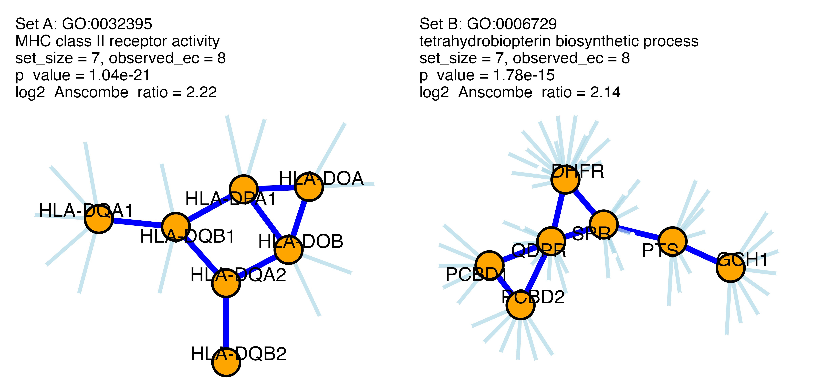
Vectorized method
The last examples illustrated how to test an individual set for its
within connectedness. When dealing with multiple sets, it is better to
utilize a vectorized method which has been optimized for speed, by using
the data.table package (Barrett et al. 2025) and fast
lambda approximation.
Method
calculate_in_stats_fast_vectorized(ecprob, sets_dt, set_membership_dt)
has the following arguments
-
ecprob: an instance ofECProb(interaction network) -
sets_dt: a data table with a single column (“set_id”) containing IDs of sets to test -
set_membership_dt’: a data table with “set_id” and “element” columns (bipartite network)
Below is the application of this method to the entire collection of
sets contained in sample_ects (GO categories (Carlson 2019),(The Gene Ontology
Consortium 2023), (“Dataset: Sample_ects”
2025)) and the interaction network sample_ecg
(extracted from STRING (Szklarczyk et al. 2023),(“Dataset:
Sample_ecg” 2025)).
# interaction network and associated ECProb
data("sample_ecg")
ecprob <- ECProb(sample_ecg)
# bipartite graph: term-element relationships
data("sample_ects")
set_membership_dt <- as.data.table(to_dataframe(sample_ects))
setnames(set_membership_dt, c("term", "element"), c("set_id", "element"))
sets_to_test <- data.table(set_id = unique(set_membership_dt$set_id))
length(sets_to_test$set_id)
#> [1] 9789
length(set_membership_dt$element)
#> [1] 33347
# within connectedness statistics for all sets
system.time(results <- calculate_in_stats_fast_vectorized(ecprob, sets_to_test, set_membership_dt))
#> user system elapsed
#> 0.333 0.003 0.316
# adding annotation (term names, not just ids)
data("sample_term_lookup")
lookup_dt <- data.table(
set_id = names(sample_term_lookup),
term_name = sample_term_lookup
)
setkey(results, set_id)
setkey(lookup_dt, set_id)
annotated_results <- lookup_dt[results, on = "set_id"]
setorder(annotated_results, -log2_Anscombe_ratio)
num_cols <- names(annotated_results)[sapply(annotated_results, is.numeric)]
annotated_results[, (num_cols) := lapply(.SD, signif, digits = 2), .SDcols = num_cols]
annotated_results
#> set_id term_name
#> <char> <char>
#> 1: GO:0005940 septin ring
#> 2: GO:0031105 septin complex
#> 3: GO:0032153 cell division site
#> 4: GO:0036038 MKS complex
#> 5: GO:0036128 CatSper complex
#> ---
#> 9785: GO:0048711 positive regulation of astrocyte differentiation
#> 9786: GO:0003139 secondary heart field specification
#> 9787: GO:0009314 response to radiation
#> 9788: GO:0099173 postsynapse organization
#> 9789: GO:0048596 embryonic camera-type eye morphogenesis
#> observed_edge_count lambda p_value log2_Anscombe_ratio set_size
#> <num> <num> <num> <num> <num>
#> 1: 73 0.260 1.2e-148 3.40 13
#> 2: 73 0.260 1.2e-148 3.40 13
#> 3: 73 0.260 1.2e-148 3.40 13
#> 4: 62 0.250 8.3e-124 3.30 12
#> 5: 49 0.130 6.5e-107 3.30 12
#> ---
#> 9785: 0 0.066 1.0e+00 -0.12 9
#> 9786: 0 0.068 1.0e+00 -0.12 7
#> 9787: 0 0.069 1.0e+00 -0.12 8
#> 9788: 0 0.080 1.0e+00 -0.14 12
#> 9789: 0 0.088 1.0e+00 -0.15 10
#> max_possible_edges
#> <num>
#> 1: 78
#> 2: 78
#> 3: 78
#> 4: 66
#> 5: 66
#> ---
#> 9785: 36
#> 9786: 21
#> 9787: 28
#> 9788: 66
#> 9789: 45Note that set_size corresponds to that of the input set
reduced to vertices represented in the ECProb object.
Distributions of some of the statistics in the above returned data table
are shown below.
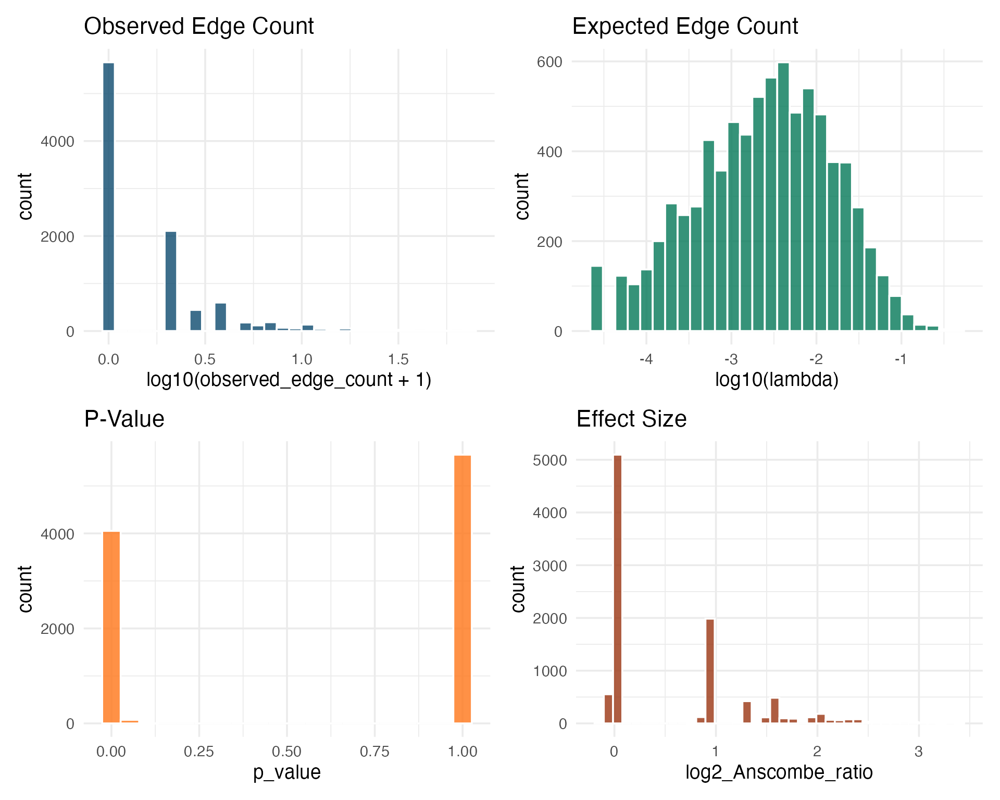
Validation with random sets
To validate the statistical approach based on the RGGED null model, the vectorized method is applied to a collection of random sets. Because they are drawn uniformly from the graph vertex universe, their connectedness should match the RGGED expectations (i.e., low effect sizes and non-significant p-values).
set.seed(1)
# random sets
n_random_sets <- 2000
set_size <- 20
random_elements <- unlist(replicate(n_random_sets,
sample(ecprob@names, set_size),
simplify = FALSE))
random_sets_membership <- data.table(
set_id = rep(paste0("Rand_", 1:n_random_sets), each = set_size),
element = random_elements
)
random_sets_ids <- data.table(set_id = unique(random_sets_membership$set_id))
# statistics
capture.output(
random_results <- calculate_in_stats_fast_vectorized(ecprob,
random_sets_ids,
random_sets_membership)
)
#> character(0)
# plots
ggplot(random_results, aes(x = log2_Anscombe_ratio, y = -log10(p_value))) +
geom_point(alpha = 0.5, color = "#0c4a6e") +
geom_hline(yintercept = -log10(0.05), linetype = "dashed", color = "red") +
annotate("text", x = min(random_results$log2_Anscombe_ratio),
y = -log10(0.05) + 0.2, label = "p = 0.05", color = "red", hjust = 0) +
labs(title = "Correlation of P-value and Effect Size",
subtitle = "Statistics computed on 2,000 random sets (Size=20)",
x = "Effect Size (log2 Anscombe Ratio)",
y = "Significance (-log10 P-value)") +
theme_minimal(base_size = 14)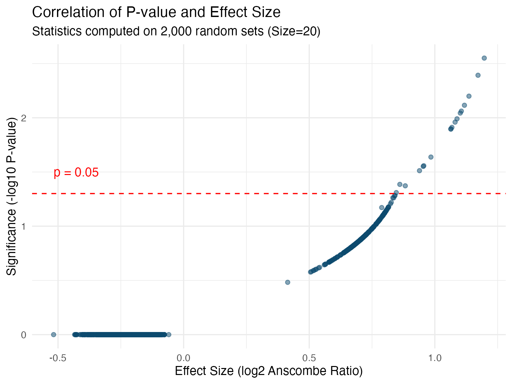
Note that “upward jumps” (smaller p-values for the same effect size) occur because statistical significance depends on sample size (or ), not just effect size.
Tests for ‘between-sets’ connectedness
These tests address the question: “Are two given vertex sets and more connected to each other than expected by chance?”
To answer this, the concept of “chance” is again defined by the Random Graph with Given Expected Degrees (RGGED). In this null model:
- The two sets of vertices and , along with their individual degrees, are specified (given).
- The edges between them are treated as independent random variables.
By comparing the observed edge count between the disjoint parts of and to the distribution of edge counts generated by the RGGED, the statistical significance of the connectedness is determined while accounting for vertex degrees.
Note that “between-sets” connectedness is distinct from the internal connectedness of the sets themselves. The analysis focuses on whether the two sets interact with each other, independently of their individual connectedness. Specifically, the sets are first reduced to their disjoint parts, and these parts are tested for connectedness.
Basic method
The basic method is again edge_count_statistics(). Two
sets
and
are passed as arguments, and argument observed_edge_count
is now obtained with method get_edge_count_between().
Below is an example with two vertex sets represented in bipartite
network sample_ects and tested for their ‘between
connectedness’ with interaction network sample_ecg and its
ECProb instance sample_ecp.
# bipartite network (term-element relationships)
data("sample_ects")
# selection of two terms and their descriptions
data("sample_term_lookup")
set1_id <- "GO:0000221"
set1_name <- sample_term_lookup[set1_id]
set1_name
#> GO:0000221
#> "vacuolar proton-transporting V-type ATPase, V1 domain"
set2_id <- "GO:0016471"
set2_name <- sample_term_lookup[set2_id]
set2_name
#> GO:0016471
#> "vacuolar proton-transporting V-type ATPase complex"
# elements mapped to terms (bipartite network sample_ects@ecprob)
set1 <- get_neighbors(sample_ects@ecprob, set1_id)
set2 <- get_neighbors(sample_ects@ecprob, set2_id)
# observed edge count in the graph between the two sets (interaction network sample_ecg)
data("sample_ecg")
sample_ecp <- ECProb(sample_ecg)
observed_ec <- get_edge_count_between(sample_ecp, set1, set2)
# calculation of statistics
stats <- edge_count_statistics(sample_ecp,
set1 = set1,
set2 = set2,
observed_edge_count = observed_ec,
lambda_method = "fast")
stats
#> $p_value
#> [1] 1.502805e-43
#>
#> $observed_edge_count
#> [1] 21
#>
#> $log2_Anscombe_ratio
#> [1] 2.777604
#>
#> $lambda
#> [1] 0.07959184
#>
#> $max_possible_edges
#> [1] 30
#>
#> $size1
#> [1] 5
#>
#> $size2
#> [1] 6Method edge_count_statistics() returns a list:
-
$observed_edge_countis the observed number of edges, here the edge count between the disjoint parts ofset1andset2 -
max_possible_edgesis the maximum number of edges one could observe in the RGGED, here the number of possible edges between the disjoint parts ofset1andset2reduced to vertices represented in theECProbobject, that is . -
$lambda, is the expected number of observed edges between disjoint setsset1andset2in the RGGED, that is, the average number of edges over all realizations of the RGGED -
$p-valueis , where is the random variable ‘number of edges betweenset1andset2’ in the RGGED -
$log2_Anscombe_ratiois the observed log effect size -
$size1andsize2: sizes of the disjoint parts of the input sets after their reduction to vertices represented in theECProbobject
Calling the probability of connecting two vertices and in the RGGED, the degree of a vertex, the graph size and the RGGED random variable ‘observed number of edges between and ’, we have
Using as effect size is important because can have a truncated Poisson distribution of parameter small enough to yield an asymmetric distribution.
With lambda_method = "fast" calculations are simplified
as follows
That is, time complexity is now instead of .
As previously mentioned, using the RGGED model takes into account
individual vertex degrees in the quantification of connectedness. To
illustrate this, consider now the pair of set3 (GO:0071986)
and set4 (GO:1990130), that yields the same doublet of set
sizes
(),
and thus the same maximum number of ‘between’ edges (30), and the same
observed number of edges (21). Because vertices of the two pairs have
different degrees, the two pairs yield different estimations of
connectedness:
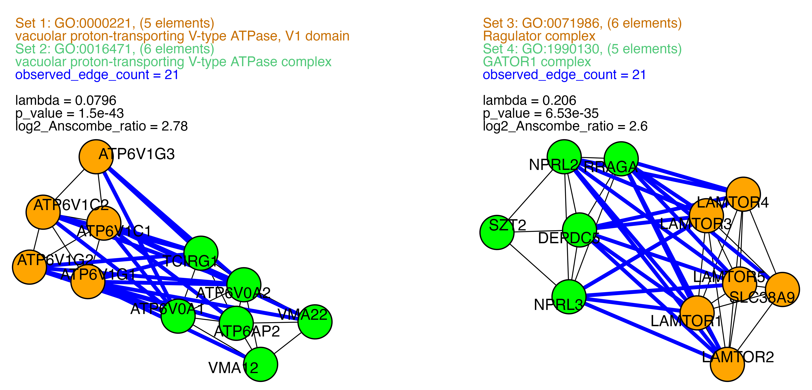
Note that “upward jumps” (smaller p-values for the same effect size) occur because statistical significance depends on sample size, not just effect size.
Vectorized method
The last examples showed how to test a single pair of sets for their between connectedness in an interaction network. When dealing with multiple pairs, it is better to utilize a vectorized method which has been optimized for speed and takes a data table of pairs as argument. Note that this method relies on a fast lambda approximation.
Method calculate_between_stats_fast_vectorized() has the
following arguments
-
object: theECProbobject representing an interaction network -
pairs_dt: a data table of pairs of set identifiers (“set1_id”, “set2_id”) -
set_membership_dt: a data table representing set-element membership (“set_id”, “element”)
Below is the application of this method to all possible pairs of sets
contained in sample_ects (GO categories (Carlson 2019),(The Gene Ontology
Consortium 2023), (“Dataset: Sample_ects”
2025)) and the interaction network sample_ecg
(extracted from STRING (Szklarczyk et al. 2023),(“Dataset:
Sample_ecg” 2025)).
Numbers of terms and possible pairs are quite large.
data("sample_ects")
data("sample_ecg")
sample_ecp <- ECProb(sample_ecg)
number_of_terms <- length(sample_ects@terms)
number_of_terms
#> [1] 9789
number_of_pairs <- number_of_terms*(number_of_terms-1)/2
number_of_pairs
#> [1] 47907366Because sample_ecp is a sparse network, it is better to
focus on pairs that are connected by at least one edge in the
interaction network. Indeed, if a pair of sets has no interaction, its
p-value is 1 and we can ignore it:
The package contains ECProb method
get_disjoint_connected_pairs() that efficiently reduces a
data table of set pairs to those pairs that are at least connected by
one edge through their disjoint parts (the between connectedness is
estimated on the disjoint parts).
Below is the application to pairs of sets derived from
sample_ects.
set_membership <- as.data.table(to_dataframe(sample_ects))
setnames(set_membership, c("term", "element"), c("set_id", "element"))
system.time(
connected_pairs <- get_disjoint_connected_pairs(sample_ecp,
set_membership,
sets = NULL)
)
#> user system elapsed
#> 0.308 0.010 0.221
setorder(connected_pairs, -observed_edges)
connected_pairs
#> set1 set2 observed_edges
#> <char> <char> <int>
#> 1: GO:0042813 GO:0061180 31
#> 2: GO:0008417 GO:0008499 30
#> 3: GO:0008499 GO:0036065 27
#> 4: GO:0045040 GO:0061617 27
#> 5: GO:0042813 GO:0070307 27
#> ---
#> 356960: GO:0050253 GO:2001070 1
#> 356961: GO:0052732 GO:2001070 1
#> 356962: GO:0005979 GO:2001070 1
#> 356963: GO:0000164 GO:2001070 1
#> 356964: GO:0008466 GO:2001070 1
nrow(connected_pairs)
#> [1] 356964
signif(nrow(connected_pairs)/number_of_pairs, 2)
#> [1] 0.0075Note that method get_disjoint_connected_pairs() has a
third optional argument sets that can be utilized to focus
on some of the sets represented in the second argument
set_membership. The method rapidly returns a much smaller
number of pairs (0.75%) than the full Cartesian product.
Next, connected_pairs are efficiently scored for their
between connectedness with method
calculate_between_stats_fast_vectorized(). This method is
fully vectorized by using the data.table package (Barrett et al.
2025) and fast lambda approximations.
# fast calculation of between statistics for candidate pairs
set_membership_dt <- as.data.table(to_dataframe(sample_ects))
setnames(set_membership_dt, c("term", "element"), c("set_id", "element"))
system.time(
results <- calculate_between_stats_fast_vectorized(sample_ecp,
connected_pairs,
set_membership_dt)
)
#> user system elapsed
#> 5.309 0.218 4.534
setorder(results, -log2_Anscombe_ratio)
num_cols <- names(results)[sapply(results, is.numeric)]
results[, (num_cols) := lapply(.SD, signif, digits = 2), .SDcols = num_cols]
results
#> set1 size1 set2 size2 observed_edges lambda p_value
#> <char> <num> <char> <num> <num> <num> <num>
#> 1: GO:0000220 6 GO:0000221 5 26 0.088 7.2e-55
#> 2: GO:0006003 5 GO:0030388 5 25 0.076 6.9e-54
#> 3: GO:0004331 5 GO:0030388 5 25 0.076 6.9e-54
#> 4: GO:0006002 7 GO:0006003 5 25 0.100 7.4e-51
#> 5: GO:0004331 5 GO:0006002 7 25 0.100 7.4e-51
#> ---
#> 356960: GO:0005940 13 GO:0051412 10 1 0.350 2.9e-01
#> 356961: GO:0031105 13 GO:0051412 10 1 0.350 2.9e-01
#> 356962: GO:0032153 13 GO:0051412 10 1 0.350 2.9e-01
#> 356963: GO:0000177 12 GO:1900153 10 1 0.360 3.0e-01
#> 356964: GO:0000177 12 GO:0060213 10 1 0.390 3.3e-01
#> log2_Anscombe_ratio
#> <num>
#> 1: 2.90
#> 2: 2.90
#> 3: 2.90
#> 4: 2.90
#> 5: 2.90
#> ---
#> 356960: 0.46
#> 356961: 0.46
#> 356962: 0.46
#> 356963: 0.46
#> 356964: 0.42Distributions of some of the statistics obtained with the above example are shown below.
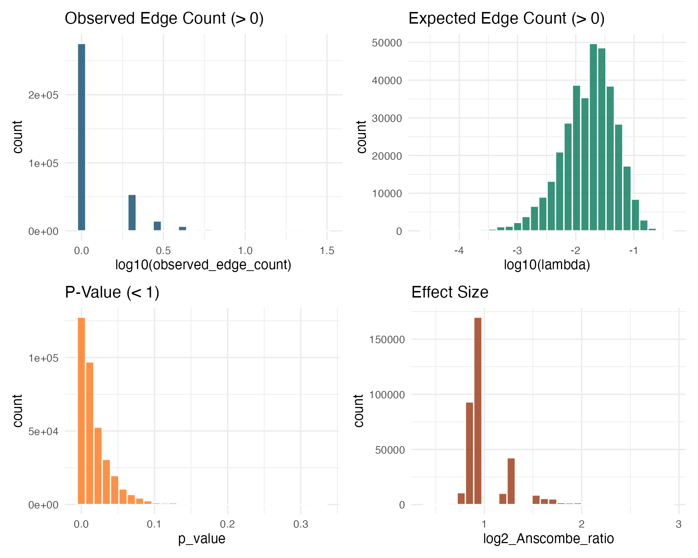
Remember that the above plots are restricted to pairs having at least
one connection. Over all possible pairs defined by the sets/terms of
sample_ects, the proportion of p-values equal to 1 is
actually 99.25%.
Validation with random sets
Similar to the within-set analysis, the between-set statistical approach based on the RGGED is validated by using pairs of random sets. Connectedness of these random sets should be consistent with p-values and effect sizes in the RGGED null model.
This validation confirms that the close-to monotonic relationship
between the RGGED p-value and the log2_Anscombe_ratio holds
for between-set tests.
# generation of random sets
set.seed(1)
n_pairs <- 2000
set_size <- 20
total_sets <- 2 * n_pairs
random_elements <- unlist(replicate(total_sets,
sample(ecprob@names, set_size),
simplify = FALSE))
random_membership_dt <- data.table(
set_id = rep(paste0("S", 1:total_sets), each = set_size),
element = random_elements
)
# pair table
random_pairs_dt <- data.table(
set1 = paste0("S", seq(1, total_sets, by = 2)),
set2 = paste0("S", seq(2, total_sets, by = 2))
)
# stats
capture.output(
random_between_results <- calculate_between_stats_fast_vectorized(
sample_ecp,
random_pairs_dt,
random_membership_dt
)
)
#> character(0)
# plots
ggplot(random_between_results, aes(x = log2_Anscombe_ratio, y = -log10(p_value))) +
geom_point(alpha = 0.5, color = "#047857") + # Green theme for between-sets
geom_hline(yintercept = -log10(0.05), linetype = "dashed", color = "red") +
annotate("text", x = min(random_between_results$log2_Anscombe_ratio),
y = -log10(0.05) + 0.2, label = "p = 0.05", color = "red", hjust = 0) +
labs(title = "Correlation of P-value and Effect Size (Between-Sets)",
subtitle = "Statistics computed on 2,000 random pairs (Size=20 vs 20)",
x = "Effect Size (log2 Anscombe Ratio)",
y = "Significance (-log10 P-value)") +
theme_minimal(base_size = 14)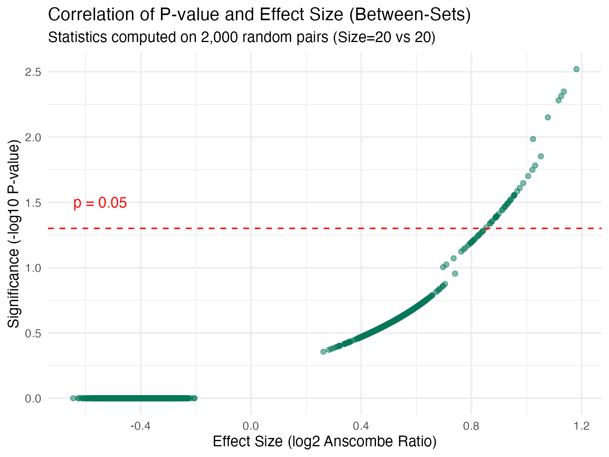
Analysis with Bipartite Graphs
The Edge-Count statistical framework based on the RGGED and utilized
for data analysis with an undirected graph represented by
ECGraph and ECProb objects, can also be
applied to the case of bipartite networks: a collection of sets (called
terms) of vertices (called elements). In this
network, edges exist only between vertices of different types. Namely,
the network represents membership of elements in terms.
The ECTermScoring class
S4 class ECTermScoring represents an undirected
bipartite graph and some associated methods. It is built from class
ECProb and has additional slots:
-
@ecprob: represents an underlyingECGraphand its associated statistical methods -
@elements: a vector of vertex names inECProb -
@terms: another vector of vertex names inECProb, disjoint from@elements
Undirected edges run only between a term and an
element. That is, an ECTermScoring instance is
a collection of terms, each having its own set of elements, though these
sets can overlap between terms. The degree
of a term is the number of elements it describes, and the degree
of an element is the number of terms it is described by.
The argument of the ECTermScoring constructor can be
either a data frame of bipartite edges or a file path.
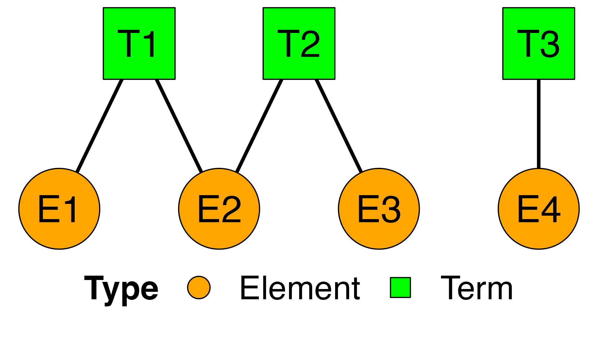
term_element_df <- data.frame(
Term = c("T1", "T1", "T2", "T2", "T3"),
Element = c("E1", "E2", "E2", "E3", "E4"),
stringsAsFactors = FALSE
)
ects <- ECTermScoring(term_element_df)
temp_file <- tempfile(fileext = ".tsv")
write.table(term_element_df, file = temp_file, sep = "\t", row.names = FALSE, quote = FALSE)
ects <- ECTermScoring(temp_file)
ects
#> An object of class "ECTermScoring" (Bipartite)
#> ------------------------------------------------
#> Statistics:
#> Terms: 3
#> Elements: 4
#> Edges: 5
#> Terms ex: T1, T2, T3
#>
#> Slot Summary:
#> @ecprob : <ECProb> object (The underlying graph engine)
#> @terms : Character vector [3]
#> @elements : Character vector [4]
#> ------------------------------------------------
unlink(temp_file)Note that the constructor will fail if a vertex appears both as term and element in the provided edge list.
Suitability for fast approximations
The @ecprob slot of an ECTermScoring object
allows for calculation of edge-count statistics on the underlying
bipartite graph, including some based on fast lambda approximations.
Because this graph is bipartite, any edge counting and associated
statistics is done on edges between terms and elements. In particular,
the method summarize_suitability_fast(), used to check a
graph for suitability to fast lambda approximations, is not optimal in
the context of an ECTermScoring object. Instead,
ECTermScoring contains its own method
summarize_suitability_bipartite() which is specifically
designed for bipartite graphs.
Here is an example of small bipartite graph that is not optimal for fast lambda approximation.
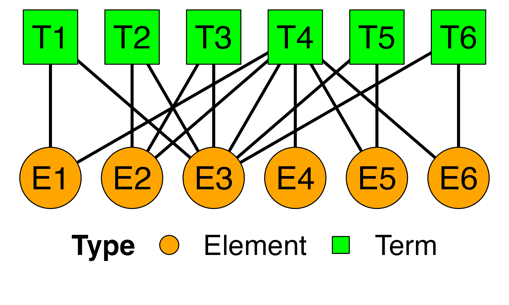
term_element_df_p <- data.frame(
Term = c("T1", "T1","T2", "T2", "T3", "T3", "T4","T4", "T4", "T4", "T4", "T4","T5", "T5", "T6", "T6"),
Element = c("E1","E3","E2", "E3", "E2", "E3", "E1","E4", "E2", "E3", "E5", "E6", "E3", "E5", "E3", "E6"),
stringsAsFactors = FALSE
)
ects <- ECTermScoring(term_element_df_p)
summarize_suitability_bipartite(ects)
#> $pij_over_1
#> [1] 0.02777778
#>
#> $prop_problematic_terms
#> [1] 0.1666667
#>
#> $prop_problematic_elements
#> [1] 0.1666667
#>
#> $summary_pij
#> Min. 1st Qu. Median Mean 3rd Qu. Max.
#> 0.0625 0.1250 0.1250 0.2222 0.3750 1.1250
#>
#> $pij_distribution
#> pij count prop
#> <num> <int> <num>
#> 1: 0.0625 5 0.13888889
#> 2: 0.1875 6 0.16666667
#> 3: 0.1250 15 0.41666667
#> 4: 0.3750 8 0.22222222
#> 5: 0.5625 1 0.02777778
#> 6: 1.1250 1 0.02777778The returned list has the following items:
-
$pij_over_1: the proportion of edges (among all possible pairs (term , element )) that yield a connection probability greater than 1 (hence unsuitable) under an approximate analytical framework of the RGGED. A value close to 0 means that fast approximation methods are appropriate. -
$prop_problematic_termsis the proportion of terms with degree greater than , where is the graph sizeecp@graph_size. Indeed, under the model for fast approximations, , where is a vertex degree; so any term with might yield with an element. -
$prop_problematic_elementsis the proportion of terms with degree greater than . Note that$prop_problematic_elements> 0 does not imply$prop_problematic_terms> 0. Likewise,$prop_problematic_terms> 0 does not imply$prop_problematic_elements> 0. -
$summary_pijis a short summary of the distribution of connection probabilities over all possible term-element pairs -
$pij_distributionis the full distribution of values in the RGGED model with fast approximations.
This said, false-positive results cannot be obtained with fast approximation methods, because
- they overestimate and values,
- they underestimate effect sizes,
- they overestimate edge-count p-values.
In other words, using the fast approximation methods by default is a conservative approach to analysis.
The EdgeCount package comes with an example of relatively large
bipartite graph sample_ects, a trimmed version of GO
categories to their human gene elements (Carlson 2019), (The Gene Ontology Consortium
2023), (“Dataset: Sample_ects”
2025).
data("sample_ects")
sample_ects
#> An object of class "ECTermScoring" (Bipartite)
#> ------------------------------------------------
#> Statistics:
#> Terms: 9,789
#> Elements: 7,244
#> Edges: 33,347
#> Terms ex: GO:0000002, GO:0000012, GO:0000017, GO:0000018...
#>
#> Slot Summary:
#> @ecprob : <ECProb> object (The underlying graph engine)
#> @terms : Character vector [9,789]
#> @elements : Character vector [7,244]
#> ------------------------------------------------Object sample_ects was trimmed to pass all the
suitability tests.
system.time(suitability <- summarize_suitability_bipartite(sample_ects))
#> user system elapsed
#> 1.344 0.185 1.530
suitability
#> $pij_over_1
#> [1] 0
#>
#> $prop_problematic_terms
#> [1] 0
#>
#> $prop_problematic_elements
#> [1] 0
#>
#> $summary_pij
#> Min. 1st Qu. Median Mean 3rd Qu. Max.
#> 1.499e-05 5.998e-05 1.200e-04 2.351e-04 2.699e-04 1.427e-02
#>
#> $pij_distribution
#> pij count prop
#> <num> <int> <num>
#> 1: 1.499385e-05 2881530 4.063557e-02
#> 2: 2.998771e-05 6622836 9.339578e-02
#> 3: 4.498156e-05 4554750 6.423146e-02
#> 4: 5.997541e-05 6739957 9.504743e-02
#> 5: 7.496926e-05 2268870 3.199579e-02
#> ---
#> 290: 1.019582e-02 115 1.621739e-06
#> 291: 1.121540e-02 62 8.743291e-07
#> 292: 1.223498e-02 32 4.512666e-07
#> 293: 1.325457e-02 15 2.115312e-07
#> 294: 1.427415e-02 1 1.410208e-08It was also built to have the same universe of human genes as
sample_ecp
(sample_ecp <- ECProb(sample_ecg)). Now,
sample_ecg and sample_ects do not represent
the same network: the first one represents interactions between
genes/elements and the second one membership of elements in terms.
Methods of ECTermScoring are tailored to a bipartite
network. This said, an ECTermScoring object has an
@ecprob slot, thus making it possible to also utilize more
general ECProb methods.
Test for connectedness of element sets to terms
Basic method
The first question to answer is: “Which terms are well related to a given set of elements?”. The task is ranking terms with respect to each other.
The ECTermScoring method to answer this question is
terms_ecset_statistics (obj, set, lambda_method)
-
objis an ECTermScoring object -
setis a character vector that will be reduced to its intersection withobj@elements -
lambda_methodis the type of lambda calculation to be utilized- “fast”: the default method, with the lowest time complexity
- “optimized”: a hybrid method having intermediate time complexity
- “accurate”: a slow method, used mostly for package development
Here is a first example expected to yield strong connectedness, by
using all elements of a term as argument set.
data("sample_ects")
term <- "GO:0005787"
set_1 <- sample_ects@ecprob@adj[[term]]
set_1
#> [1] "23478" "28972" "60559" "90701" "9789"
dt_1 <- as.data.table(terms_ecset_statistics(sample_ects, set_1))
setorder(dt_1, -log2_Anscombe_ratio)
num_cols <- names(dt_1)[sapply(dt_1, is.numeric)]
dt_1[, (num_cols) := lapply(.SD, signif, digits = 2), .SDcols = num_cols]
dt_1
#> term_id p_value lambda observed_edge_count log2_Anscombe_ratio set_size
#> <char> <num> <num> <num> <num> <num>
#> 1: GO:0005787 3.2e-18 0.00082 5 1.90 5
#> 2: GO:0006465 1.0e-16 0.00160 5 1.90 5
#> 3: GO:0019068 9.9e-04 0.00099 1 0.94 5Edge-count statistics are calculated here in the same way they are for between connectedness, with now one of the two sets being a single term. Call the element set, the degree of element , the degree of term , the graph size, the random variable ‘edge count between and in the RGGED’, its maximum value, and the RGGED probability of a connection between and . We have
Again, using as effect size is important because can have a truncated Poisson distribution of parameter small enough to yield an asymmetric distribution.
With lambda_method = "fast" calculations are simplified
as follows
Connectedness to terms of set_1 is strong as shown by
large values of observed_edge_count and values of
log2_Anscombe_ratio greater than 1. As expected, the term
used to define set_1 is at the top of the results.
It is important to stress that results based on an underlying RGGED are not equivalent to those obtained with a Fisher-exact test: the edge-count approach uniquely takes into account the number of terms each element is connected to.
Next are the results obtained with a random set of elements
set_2 having the same size as set_1.
set.seed(2)
set_2 <- sample(sample_ects@elements, length(set_1))
dt_2 <- as.data.table(terms_ecset_statistics(sample_ects, set_2))
setorder(dt_2, -log2_Anscombe_ratio)
num_cols <- names(dt_2)[sapply(dt_2, is.numeric)]
dt_2[, (num_cols) := lapply(.SD, signif, digits = 2), .SDcols = num_cols]
dt_2
#> term_id p_value lambda observed_edge_count log2_Anscombe_ratio set_size
#> <char> <num> <num> <num> <num> <num>
#> 1: GO:0039694 0.00036 0.00036 1 0.94 5
#> 2: GO:0098847 0.00036 0.00036 1 0.94 5
#> 3: GO:0045218 0.00054 0.00054 1 0.94 5
#> 4: GO:0032510 0.00072 0.00072 1 0.94 5
#> 5: GO:0070097 0.00072 0.00072 1 0.94 5
#> 6: GO:1905691 0.00072 0.00072 1 0.94 5
#> 7: GO:0050708 0.00110 0.00110 1 0.94 5
#> 8: GO:0010890 0.00110 0.00110 1 0.94 5
#> 9: GO:0005915 0.00130 0.00130 1 0.93 5
#> 10: GO:0046931 0.00130 0.00130 1 0.93 5
#> 11: GO:0090136 0.00140 0.00140 1 0.93 5
#> 12: GO:0046930 0.00180 0.00180 1 0.93 5Results with set_2 do not indicate strong connectedness
to terms.
-
observed_edge_countvalues are all 1. Value 1 is the expected minimum, not 0, because random elements are represented in the bipartite graph, i.e. they map to at least one term. -
log2_Anscombe_ratiovalues are positive, but between 0.93 and 0.94, that is, small compared to the best ones seen withset_1. Value 0.937 is actually that expected for an observed edge count of 1 and very small compared to 3/8: . -
p_valuevalues are larger than those obtained withset_1.
Now, it is important to clarify the meaning of p_value
as returned by method terms_ecset_statistics. It means here
the probability of observing at least observed_edge_count
between the selected set and the terms of the bipartite network
under the null model of RGGED (similar to edges being
rewired). p_value is a useful measure to compare matched
terms, though log2_Anscombe_ratio is a better one. Since
sample_ects contains no isolated elements (every element
maps to at least one term), any random set will produce an edge count of
at least one and a p-value less than 1. Namely, the distribution of
p-values for random sets of elements drawn from sample_ects
is not uniform.
This distribution can be estimated with a vectorized version of
terms_ecset_statistics().
Vectorized method
Method terms_ecset_statistics_vectorized() is similar to
terms_ecset_statistics() but it now accepts multiple sets
as argument:
-
input_sets: a set-element data table with columns “set_id” and “element”
Below is the application to 10,000 random sets of the same size as
set_1.
data("sample_ects")
n_sets <- 10000
set_size <- length(set_1)
random_elements <- unlist(replicate(n_sets, sample(sample_ects@elements, set_size), simplify = FALSE))
input_sets <- data.table(
set_id = rep(paste0("S", 1:n_sets), each = set_size),
element = random_elements
)
system.time(
result <- terms_ecset_statistics_vectorized(sample_ects, input_sets)
)
#> user system elapsed
#> 1.798 0.317 2.038The returned value result is a named list, where each
name is a set_id and the value is the corresponding data table of
statistics, such as in method terms_ecset_statistics(),
with columns observed_edge_count,
log2_Anscombe_ratio and p_value.
random_stats_dt <- rbindlist(result, idcol = "set_id")
summary(random_stats_dt$observed_edge_count)
#> Min. 1st Qu. Median Mean 3rd Qu. Max.
#> 1.000 1.000 1.000 1.001 1.000 2.000
summary(random_stats_dt$log2_Anscombe_ratio)
#> Min. 1st Qu. Median Mean 3rd Qu. Max.
#> 0.8993 0.9321 0.9340 0.9337 0.9354 1.3302The distributions of log2_Anscombe_ratio over 10,000
random sets is indeed centered around 0.934, a smaller value than 0.937
due to
and asymmetry of the distribution. Likewise, the distribution of
p_value (RGGED p-value) is definitely not symmetric and
uniform:
summary(random_stats_dt$p_value)
#> Min. 1st Qu. Median Mean 3rd Qu. Max.
#> 2.175e-07 9.591e-04 1.678e-03 2.054e-03 2.695e-03 2.007e-02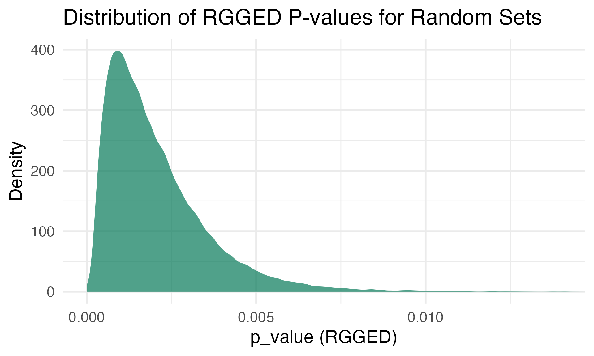
This is of course because only elements connected to at least one
term are selected in the random sets. Because the control distribution
of p_value is not uniform in [0,1], one cannot apply a
standard False Discovery Rate (FDR) corrections like Benjamini-Hochberg
(Benjamini and
Hochberg 1995). Instead, an empirical approach based on
simulations is required.
FDR correction for connectedness of an element set to terms
The distribution of RGGED p-values for connectedness of random sets to terms is not uniform. This implies that standard False Discovery Rate (FDR) corrections (like Benjamini-Hochberg) are not applicable. To provide a rigorous measure of significance, an Empirical FDR approach is used: compare the scores of the real set against a null distribution generated by drawing random element sets of the same size.
Method terms_ecset_statistics_fdr() of
ECTermScoring is a wrapper performing the entire
analysis:
- Calculates raw statistics for the input set, as in
terms_ecset_statistics() - Generates
n_permutationsrandom sets of the same size, calculates Normalized Enrichment Score (NES), and estimates FDR q-values (functioncalculate_empirical_fdr()).
Below is the application to set_1 (elements of term
GO:0005787).
# 1000 permutations
system.time(
fdr_results <- terms_ecset_statistics_fdr(
sample_ects,
element_set = set_1,
n_permutations = 1000,
seed = 1
)
)
#> user system elapsed
#> 0.265 0.022 0.249
# Add term names
data("sample_term_lookup")
fdr_results$term_name <- sample_term_lookup[fdr_results$term_id]
# numerical results formatting
num_cols <- names(fdr_results)[sapply(fdr_results, is.numeric)]
fdr_results[, (num_cols) := lapply(.SD, signif, digits = 4), .SDcols = num_cols]
fdr_results
#> term_id p_value lambda observed_edge_count log2_Anscombe_ratio
#> <char> <num> <num> <num> <num>
#> 1: GO:0005787 3.176e-18 0.0008247 5 1.9190
#> 2: GO:0006465 1.015e-16 0.0016490 5 1.9170
#> 3: GO:0019068 9.891e-04 0.0009896 1 0.9353
#> set_size nes fdr_q_value term_name
#> <num> <num> <num> <char>
#> 1: 5 2.055 0.000065 signal peptidase complex
#> 2: 5 2.061 0.000130 signal peptide processing
#> 3: 5 1.002 0.134000 virion assemblyThe result is a data table of terms ranked by descending
log2_Anscombe_ratio. The nes column indicates
the strength of the enrichment relative to the null model, and
fdr_q_value provides the estimated probability that the
finding is a false discovery.
GO:0005787 (Signal Peptidase Complex) is the term used to generate set_1. It has the strongest signal (lowest
p_value, highestlog2_Anscombe_ratioand smallestfdr_q_value), reflecting the perfect match.GO:0006465 (Signal Peptide Processing) is also a top hit. Its higher
lambdaindicates it is a larger term containing all the elements of the first term. Note that itsnesscore is slightly higher compared toset_1. This is because larger terms tend to have lower randomlog2_Anscombe_ratio, creating a smaller denominator for the NES calculation.
Unlike element sets representing actual terms, random element sets will not yield low fdr q-values.
set.seed(3)
set_3 <- sample(sample_ects@elements, length(set_1))
fdr_results <- terms_ecset_statistics_fdr(
sample_ects,
element_set = set_3,
n_permutations = 1000,
seed = 1
)
num_cols <- names(fdr_results)[sapply(fdr_results, is.numeric)]
fdr_results[, (num_cols) := lapply(.SD, signif, digits = 4), .SDcols = num_cols]
setorder(fdr_results, fdr_q_value)
fdr_results[1:5]
#> term_id p_value lambda observed_edge_count log2_Anscombe_ratio
#> <char> <num> <num> <num> <num>
#> 1: GO:0035878 0.0012590 0.0012590 1 0.9348
#> 2: GO:0060334 0.0004197 0.0004198 1 0.9364
#> 3: GO:0070104 0.0004197 0.0004198 1 0.9364
#> 4: GO:1902215 0.0004197 0.0004198 1 0.9364
#> 5: GO:0032290 0.0004197 0.0004198 1 0.9364
#> set_size nes fdr_q_value
#> <num> <num> <num>
#> 1: 5 0.9348 0.9983
#> 2: 5 0.9364 1.0000
#> 3: 5 0.9364 1.0000
#> 4: 5 0.9364 1.0000
#> 5: 5 0.9364 1.0000Vertex Set Enrichment Analysis (VSEA)
Another analysis type in package EdgeCount is a test for
connectedness between a ranked list of elements and the terms in the
bipartite graph. The question asked is: “Are there terms that connect to
the top-ranked elements in a significant way - that is, more than
expected by chance?”.
The concept of “chance” here corresponds to a null model where the element ranks are uniformly random.
The full process and its associated random experiment are described below:
- Conditioning: A list of element ranks is provided as input. The universe of the analysis (terms and elements) is reduced to the intersection of the graph universe and the input elements to ensure valid statistical conditioning.
-
Enrichment profile (Running Score): A running
enrichment score is calculated by traversing the ranked list from top to
bottom. For every rank
(from 1 to
):
- Take the set of the top elements.
- Calculate the expected () and observed () edge counts between this top set and the each term.
- Compute the log Anscombe ratio at this rank:
- Degree penalization: A unique property of this profile—unlike standard GSEA—is that it accounts for element degrees. If the top ranks contain “hubs” (elements with high degrees), the expected count increases significantly. This acts as a penalty on the effect size (), preventing the identification of enrichment driven solely by promiscuous elements.
- Null model: A control distribution of scores is built by repeating the above process for permutations, where the element ranks, in the reduced universe of elements, are shuffled uniformly at random.
- Significance: For each term, estimates of the max (positive enrichment) are computed. FDR q-values are then estimated by comparing the observed NES against the simulated control distribution.
Sorting the results by ascending FDR q-values enables the user to detect terms significantly connected to top ranks (without defining a rank threshold) and below a desired false discovery rate.
Here is a first trivial positive control for method
run_vsea(). Elements of a term of size 5 are given the top
ranks.
term_id <- "GO:0000347"
term_elements <- sample_ects@ecprob@adj[[term_id]]
element_ranks <- c(sample(term_elements), sample(setdiff(sample_ects@elements, term_elements)))
system.time(
vsea_results <- run_vsea(sample_ects, element_ranks = element_ranks, n_permutations = 1000, n_cores = 2, seed = 1)
)
#> user system elapsed
#> 4.266 0.979 3.251
max_summary <- vsea_results$max_score_summary
max_summary$term_name <- sample_term_lookup[max_summary$term_id]
setorder(max_summary, fdr_q_value)
num_cols <- names(max_summary)[sapply(max_summary, is.numeric)]
max_summary[, (num_cols) := lapply(.SD, signif, digits = 3), .SDcols = num_cols]
head(max_summary, 5)
#> term_id max_score nes fdr_q_value term_size rank_at_max observed_ec
#> <char> <num> <num> <num> <num> <num> <num>
#> 1: GO:0000347 1.92 2.80 0.000 5 5 5
#> 2: GO:0000445 1.92 2.80 0.000 6 5 5
#> 3: GO:0000346 1.92 2.80 0.000 9 5 5
#> 4: GO:0035194 1.45 2.11 0.428 11 506 5
#> 5: GO:0010954 1.44 2.10 0.428 10 126 3
#> term_name
#> <char>
#> 1: THO complex
#> 2: THO complex part of transcription export complex
#> 3: transcription export complex
#> 4: regulatory ncRNA-mediated post-transcriptional gene silencing
#> 5: positive regulation of protein processingUsing run_vsea() correctly identifies the selected term
GO:0000347 based on its element ranks, as well as two
related terms which have common elements.
Next is the obvious negative control of using random element ranks.
element_ranks <- sample(sample_ects@elements)
vsea_results <- run_vsea(sample_ects, element_ranks = element_ranks, n_permutations = 1000, n_cores = 2, seed = 1)
max_summary <- vsea_results$max_score_summary
max_summary$term_name <- sample_term_lookup[max_summary$term_id]
setorder(max_summary, fdr_q_value)
num_cols <- names(max_summary)[sapply(max_summary, is.numeric)]
max_summary[, (num_cols) := lapply(.SD, signif, digits = 3), .SDcols = num_cols]
head(max_summary, 5)
#> term_id max_score nes fdr_q_value term_size rank_at_max observed_ec
#> <char> <num> <num> <num> <num> <num> <num>
#> 1: GO:0048771 1.53 2.23 0.427 9 225 4
#> 2: GO:0048842 1.47 2.14 0.802 4 718 4
#> 3: GO:0034333 1.44 2.11 0.847 8 402 4
#> 4: GO:0005587 1.40 2.05 0.847 6 614 4
#> 5: GO:0005726 1.38 2.02 0.847 4 454 3
#> term_name
#> <char>
#> 1: tissue remodeling
#> 2: positive regulation of axon extension involved in axon guidance
#> 3: adherens junction assembly
#> 4: collagen type IV trimer
#> 5: perichromatin fibrilsThis time, no term obtains a small fdr q-value.
Last is a more complex positive control based on both
sample_ects (term-element network) and
sample_ecg (element interaction network). The element of
highest degree in the interaction network is identified and its set of
neighbors is retrieved. These neighbors, not containing the hub itself
to avoid trivial enrichment, are then assigned the top ranks.
# finds the sample_ecg hub
data("sample_ecg")
data("sample_gene_symbol_lookup")
all_degrees <- unlist(sample_ecg@degrees)
gene_id <- names(all_degrees)[which.max(all_degrees)]
gene_symbol <- sample_gene_symbol_lookup[gene_id]
paste0("Hub : ", gene_symbol, " (Entrez: ", gene_id, ")")
#> [1] "Hub : VIP (Entrez: 7432)"
# neighborhood ranking
all_elements <- sample_ects@elements
neighbors <- get_neighbors(sample_ecg, gene_id)
valid_neighbors <- intersect(neighbors, all_elements)
ordered_ids <- c(
sample(valid_neighbors), # neighbors, without hub
sample(setdiff(all_elements, valid_neighbors)) # the rest
)
element_ranks <- setNames(seq_along(ordered_ids), ordered_ids)
# run VSEA, 1000 permutations
system.time(
vsea_results <- run_vsea(sample_ects, element_ranks = element_ranks, n_permutations = 1000, n_cores = 2, seed = 1)
)
#> user system elapsed
#> 4.132 0.595 3.092
# results
max_summary <- vsea_results$max_score_summary
max_summary$term_name <- sample_term_lookup[max_summary$term_id]
setorder(max_summary, fdr_q_value)
num_cols <- names(max_summary)[sapply(max_summary, is.numeric)]
max_summary[, (num_cols) := lapply(.SD, signif, digits = 3), .SDcols = num_cols]
head(max_summary, 8)
#> term_id max_score nes fdr_q_value term_size rank_at_max observed_ec
#> <char> <num> <num> <num> <num> <num> <num>
#> 1: GO:0043950 1.86 2.71 0.0000 10 25 5
#> 2: GO:0001963 1.71 2.50 0.0005 10 25 4
#> 3: GO:0001634 1.57 2.29 0.0455 3 24 3
#> 4: GO:0004999 1.57 2.29 0.0455 3 24 3
#> 5: GO:0071880 1.54 2.24 0.0738 12 16 3
#> 6: GO:0002024 1.52 2.21 0.0918 13 23 3
#> 7: GO:0048407 1.47 2.14 0.2400 9 298 4
#> 8: GO:0000931 1.45 2.12 0.2910 9 326 4
#> term_name
#> <char>
#> 1: positive regulation of cAMP-mediated signaling
#> 2: synaptic transmission, dopaminergic
#> 3: pituitary adenylate cyclase-activating polypeptide receptor activity
#> 4: vasoactive intestinal polypeptide receptor activity
#> 5: adenylate cyclase-activating adrenergic receptor signaling pathway
#> 6: diet induced thermogenesis
#> 7: platelet-derived growth factor binding
#> 8: gamma-tubulin ring complexUsing run_vsea() yields significantly-scoring terms that
are related to known functions of the hub ‘Vasoactive Intestinal
Peptide’ (VIP).
References
sample_ecg is a
subset of the human STRING network (version 12.0) with interaction
scores of 900 or higher. Vertex IDs are Entrez Gene IDs (see Carlson,
2019). The network has been trimmed to create a smaller, more manageable
example for the package’s vignettes and tests. Source: string-db.org.
Data from STRING is licensed under CC BY 4.0.
sample_ects is
derived from Gene Ontology (GO) term-to-gene mappings (see Ashburner et
al., 2000; GO Consortium, 2023). Element IDs are Entrez Gene IDs (see
Carlson, 2019). Source: geneontology.org. GO data is licensed under CC
BY 4.0.